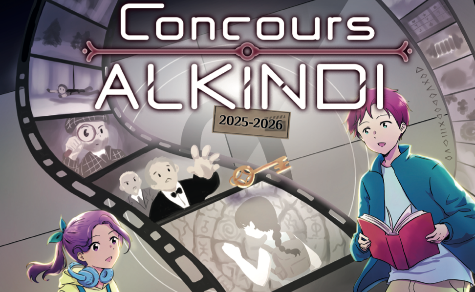
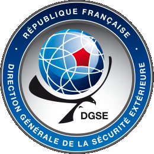
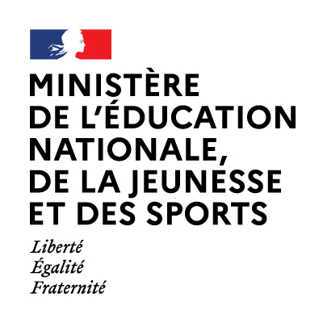
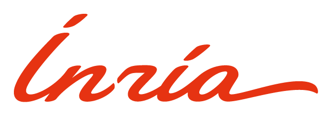
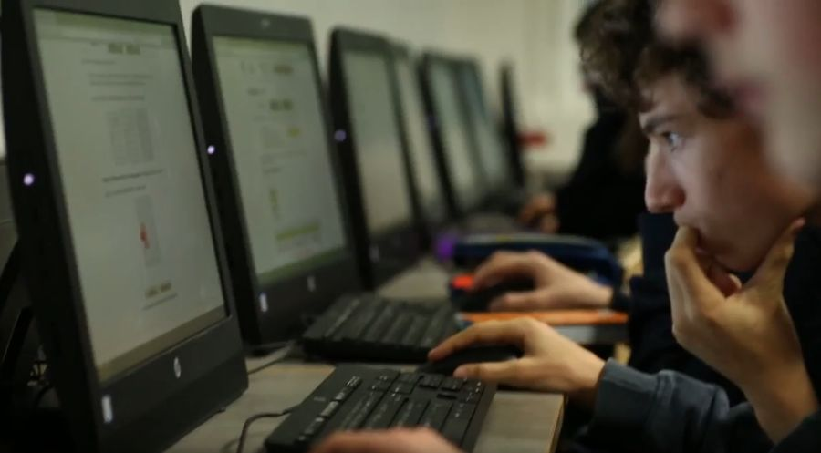
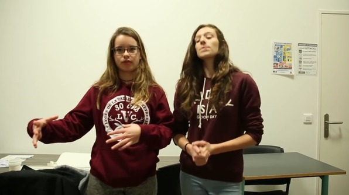
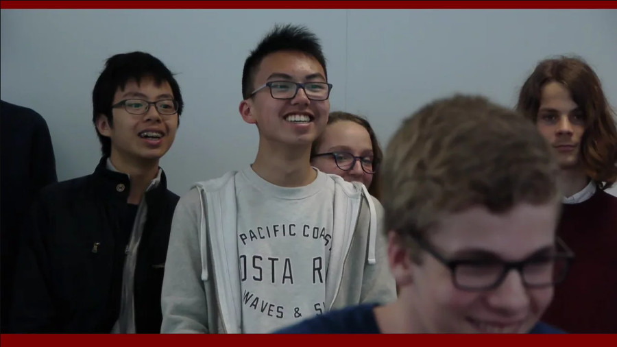
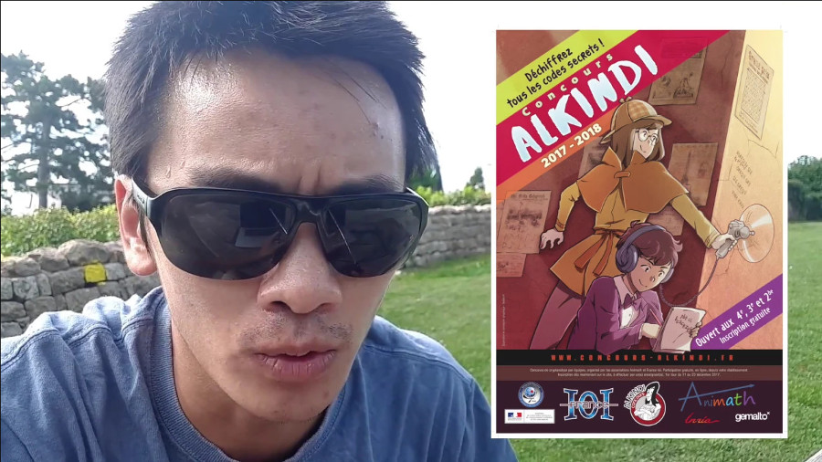

-
Le concours Alkindi 2026-2027 commencera le 7 décembre ! Vous pourrez bientôt inscrire vos classes sur coordinateur.concours-alkindi.fr. Retrouvez les détails des dates des différents tours sur le manuel du concours.
Alkindi, c’est quoi ?
Le concours Alkindi est une compétition de cryptographie ouverte aux classes de 4e, 3e et 2de. Il est organisé par les associations Animath et France-ioi. La participation est entièrement gratuite.
Déroulement
Le concours 2026-2027 comporte deux premiers tours accessibles sans sélection. Une phase de préparation permet ensuite de se qualifier au troisième tour, à l’issue duquel 20 équipes accèdent à la finale.
- Du lundi 7 décembre au vendredi 22 janvier : le premier tour est une épreuve de 45 minutes sur ordinateur ou tablette, à laquelle on peut participer seul·e ou en binôme, sous la surveillance d'un·e enseignant·e. Il s’agit d’une série de problèmes interactifs pour découvrir divers aspects de la cryptanalyse. Les épreuves des années précédentes peuvent être testées sur epreuve.concours-alkindi.fr.
- Du lundi 1er février au vendredi 26 février : le deuxième tour est une épreuve au même format que le 1er tour mais avec seulement trois sujets plus longs que ceux du 1er tour.
- Du lundi 1er mars au vendredi 9 avril : une phase de préparation et qualification au troisième tour à faire en classe et/ou à la maison sur les sujets du 3e tour. Pendant cette phase, les élèves forment des équipes qui doivent atteindre un seuil de points prédéterminé pour se qualifier au 3e tour.
- Du lundi 22 mars au vendredi 9 avril : le troisième tour est une épreuve constituée des mêmes sujets que la phase de préparation, mais à résoudre avec de nouvelles données et en une heure et demie, par équipes et sous la surveillance d'un·e enseignant·e. Seule cette épreuve compte pour la sélection en finale.
- Le mercredi 12 mai : la finale est une épreuve de 2 heures. Les sujets des années précédentes sont disponibles sur cette page. Les élèves assisteront à des ateliers de cryptographie donnés par des chercheurs, avant la cérémonie de clôture, lors de laquelle les résultats seront annoncés, avec la participation de nos différents partenaires.
Pour plus de détails sur le déroulement des tours, consultez le manuel du concours.
Vous êtes enseignant·e et souhaitez inscrire vos classes ?
L'organisation est très simple. Vous pouvez à tout moment devenir coordinateur/coordinatrice sur coordinateur.concours-alkindi.fr et inscrire vos élèves.
Vous êtes élève en 4e, 3e ou 2nde ?
L'inscription doit passer par un·e enseignant·e de votre établissement. Parlez du concours à vos enseignant·e·s et transmettez-leur l'adresse concours-alkindi.fr.
Objectifs
La sécurité des données numériques et de leur transmission est un des enjeux majeurs de notre société, que ce soit pour sécuriser les transactions bancaires ou garantir la protection de la vie privée. L'objectif du concours est de montrer aux élèves que les mathématiques et l’informatique permettent de comprendre les outils utilisés dans ce domaine.
Nous souhaitons faire découvrir aux élèves cette application très concrète des mathématiques, qui joue un rôle fondamental dans leur vie quotidienne. Nous voulons les faire réfléchir, de façon ludique, aux fondements mathématiques, informatiques et logiques de la cryptanalyse. Enfin, nous souhaitons les sensibiliser à la question importante de la sécurité de l’information.
Ce concours rentre dans le cadre de la Stratégie mathématiques et du plan École numérique du Ministère de l’Éducation nationale.
Qui peut participer ?
Tou·te·s les élèves scolarisé·e·s en 4e, 3e ou 2de dans un établissement français.
Les élèves d'autres classes peuvent faire les épreuves des deux premiers tours.
Je n'ai jamais fait de crypto. C'est grave ?
Pas du tout. Au contraire, c’est le principe ! Ce concours s’adresse à des personnes qui n’ont jamais fait de cryptanalyse. Lors des épreuves en temps limité, toutes les informations nécessaires seront contenues dans le sujet.
Est ce que c'est difficile ?
Le concours est accessible à tou·te·s les élèves de quatrième, troisième et seconde. Lors de la première épreuve, ouverte à tou·te·s, chaque question comporte trois versions de difficulté croissante. Ainsi, chaque participant·e peut s’amuser à résoudre des défis adaptés à son niveau et découvrir les principes de base de la cryptographie. Pour le deuxième tour, il s'agit aussi surtout de faire preuve de persévérance et de bien travailler en équipe.
Mais il faut quand même être bon en maths ?
Pas nécessairement, certains problèmes font appel à certaines notions de fin de collège, mais les mathématiques ne sont pas la principale difficulté.
Alors qu’est-ce qu’il faut savoir ?
Il n’y a pas de prérequis autres que le programme de collège. Venez avec l’esprit ouvert, faites preuve de logique et suivez les consignes. Et surtout amusez vous !
Qu'est ce qu’on gagne ?
Nous offrons à chaque membre des trois meilleures équipes nationales un kit Raspberry Pi ou Arduino (en fonction des stocks disponibles) accompagné de capteurs et actionneurs, dans l'objectif d'encourager les gagnants à l'apprentissage de la programmation.
Les autres équipes finalistes gagneront un livre sur les thèmes de la cryptographie, de l'informatique et des mathématiques.
Sponsors et partenaires



En apprendre plus sur les organisateurs, sponsors et partenaires du concours Alkindi.
L'affiche
Pour faire connaître le concours dans votre établissement, n'hésitez pas à imprimer et diffuser notre affiche ! L'affiche de l'édition précédente 2025-2026 est téléchargeable ici. Vous trouverez bientôt l'affiche de la prochaine édition et vous pouvez dès à présent retrouver les affiches des éditions précédentes dans la rubrique épreuves précédentes.
Vous pouvez également relire la bande dessinée associée au concours.
Vidéos
-

Lancement de la 3e édition du concours Alkindi -

Témoignages de participants au 1er tour du concours 2017-2018 -

Visite d'un laboratoire de cryptographie par des équipes du concours -

Lê, auteur de la chaîne Youtube Science4all, a rencontré les lauréats d'une académie
Qui était Al Kindi ?
Al Kindi est un savant arabe du IXe siècle qui s'est intéressé à de nombreuses sciences, allant de la géométrie à la médecine et à la chimie. Dans le « Manuscrit sur le chiffrement des messages cryptographiques », il explique comment casser les meilleurs codes connus à son époque, à l'aide de la technique de l'analyse de fréquence. C'est la première trace connue de cryptanalyse. Par conséquent, il est considéré comme l'un des fondateurs de la discipline.